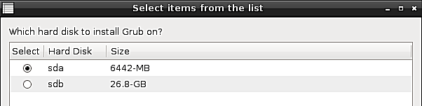

Restaurar GRUB en el MBR - Rescapp - Documentation
-
Paso 1Rescapp busca las particiones que tienen en ellas el siguiente archivo: /etc/issue basandose en la información encontrada en el archivo /proc/partitions.
-
Paso 2Si estas particiones se han encontrado Rescapp le presenta las particiones que tienen en ellas el siguiente archivo: /etc/issue. Al mismo tiempo se le pregunta:
Which partition?Es decir qué partición es su GNU/Linux principal. Se supone que ha de elegir su partición GNU/Linux principal (probablemente sólo verá una) y pulsar el botón OK.

-
Paso 3Rescapp busca los discos duros presentes en su sistema basandose en la información encontrada en el archivo /proc/partitions.
-
Paso 4Se le pregunta:Which hard disk to install Grub on?Es decir, en qué disco duro instalar Linux. Se supone que ha de echar un vistazo a los tamaños de los discos duros (para poder identificar sus discos duros) y elegir (normalmente) el que está configurado para arrancar el primero según la configuración de la BIOS.

-
Paso 5Se le muestra:Order hard disks according to boot order. Press OK to continue.. Eche un vistazo a los discos duros y sus tamaños. Ordenelos de acuerdo al orden de arranque de la BIOS y pulse OK.

-
Paso 6Rescapp con toda la información obtenida va a crear un archivo device.map en su instalación de Gnu/Linux (que va a ser borrada más tarde) e intentará instalar grub en su disco duro seleccionado gracias al comando grub-install de la propia distribución de Gnu/Linux.Por favor espere. Actualmente (Rescatux 0.23) este paso tarda algún tiempo pero no aparce ningún mensaje que indique que hay que esperar.
-
Paso 7Se le informa del proceso de instalación de grub.El mensaje se explica a sí mismo. Bien obtiene:Grub was installed OK! :) (Ha ido bien.)oFailure! Grub was not installed. Something went wrong! :((Algo ha ido mal)

-
Paso 8Un fichero de log llamado: grub-install.log.txt puede encontrarse en el directorio logs del escritorio.